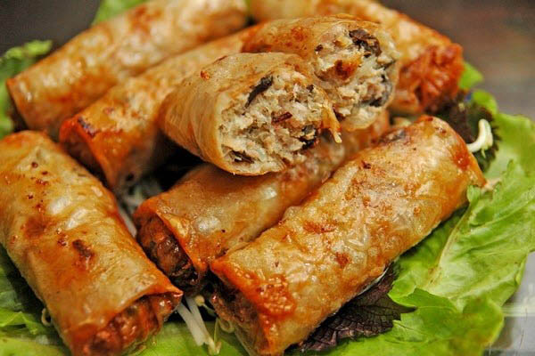

Nem Rán

These are the recipes to make nem rán (friend spring rolls)
Ingredients
- Grounded Beef, Shrimp
- Green Onions
- Dried Wood Ear
- Vermicelli
- Carrots
- Rice Paper
- Eggs
Instruction
- Chop the Wood Ears, Carrots, and Vermicelli into small pieces
- Put the grounded beef, shrimp, green onions, carrots, wood ears, and vermicilli into a pot
- Crack an eggs and put it into the pot
- Mix all of them with a pair of chopsticks
- Place the mixture in sizable amounts on the rice papers
- Roll the rice paper, make sure it does not let the stuffing fall
- Deep-fry the rolls
- Enjoy